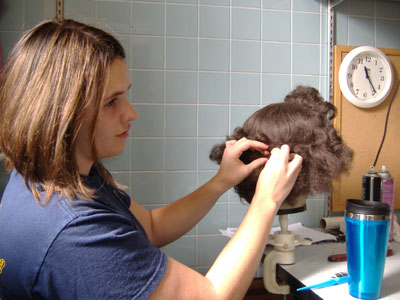
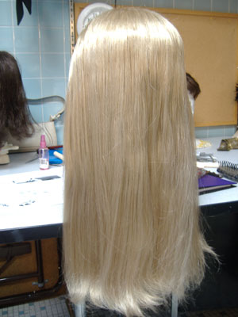
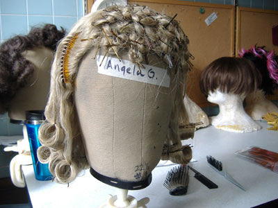
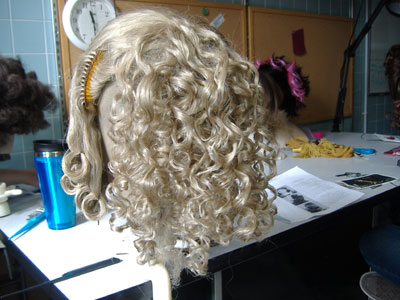

Step One: Gather Materials
1. Foam Styling Head
2. Cheap plastic combs for styling
3. Bobby pins/Hair pins
4. Hair nets matching your wig's color (they also com in "invisible" or clear)
5. Spray-on conditioner (if it's safe for human hair, it's safe for wigs though you can buy wig conditioner if you want.)
6. Flat iron/steamer/curling iron
7. Extra wefts of hair (Depends on the quality of your wig and the complexity of the style.)
8. Hairspray or gel

Tiffany working on a wig.
Step Two: Style Wig
First, firmly pin your wig onto the Styrofoam head and set it on the table.
Then, you need to comb out any tangles that may have snuck in during transit. Use a fine tooth comb and some conditioner to ease this process, gently working out tangles
starting at the bottom and working your way up.
Now you are ready to work towards a style. This is mostly a learn-as-you-go process, and I would suggest trying several different experiments before settling on a final way of styling the wig. You will need to work very diligently to make sure that the wefts of hair do not show any gaps, that the style looks natural, and that it is
balanced and will not give you a headache by being incredibly laden with heavy pins. This is where the hairnets and hair spray come in handy. If you need lots of height you can stuff a hairnet with loose hairs from the comb (or extras from another weft if you bought one) and wrap the hair around it. This is called a "rat."
When my roommate styled a sailor moon wig, she chose to wrap hair from an extra weft around a hairnet full of ratted strands and then pinned them into the hairstyle instead of trying to make the buns out of concentrated hair or even hair from the original wig
One tip that my professor gave us in our wig class was to divide the hairstyle into five sections: top, right, left, crown, and back. She preferred to style wigs one section at a time, to better take her time smoothing or curling. It also makes the task easier to break down into manageable parts between which you can take a break.
She also told us that wigs which hug the head in one place at least will look more natural, and that we should not strive for perfection but naturalness.

Combed out.

Pinned up.

Hot mess of curls.
Step Three: Hold Style in Place
Use rubber bands, pins, and nets to your hearts content, then spray with hairspray or use gel to keep your hairstyle in place--after all, you probably spent several hours styling this wig and you want it to stay together. You can use hairnets to cover sections of hair like a bun or a group of curls to better protect them from being mussed.
When you are finished, no one should be able to see any pins or nets. While a net can be a useful tool to cover sections of completed hair to keep it together at a convention or day out, you can hide them by pinning them into the hairstyle so that they aren't tenting over any space between parts of the style.
If you're unhappy with the style, you can always take out your pins and nets, comb and condition the wig, and start over!
Store the wig on the foam head and carry it in a box so that the style doesn't get messed up while you are traveling.
Back to Wigs